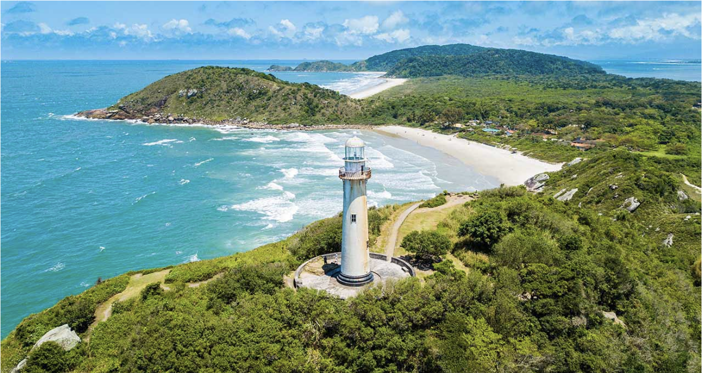
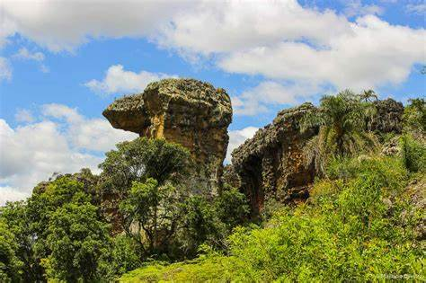
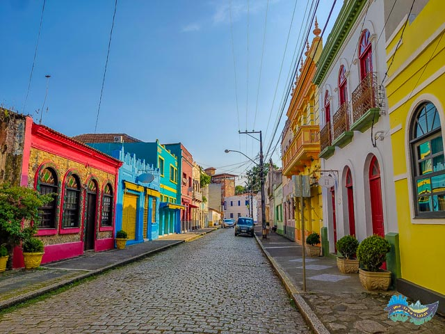

Viagens a locais próximos
Ilha do Mel
O que fazer
A Ilha do Mel, no Paraná, é um verdadeiro paraíso natural, oferecendo uma gama de atividades para quem a visita. Os apaixonados pela natureza poderão apreciar longas caminhadas pelos caminhos da ilha, avistando a fauna e a flora local, além de lindas paisagens. Não deixe de visitar as belas praias, como a Praia do Farol e a Praia de Encantadas, para relaxar, tomar sol e nadar. Para os mais aventureiros, o surfe e o stand-up paddle são atividades populares devido às excelentes condições marítimas.
Confira aqui o mapa da região chamada Brasília
Confira aqui o mapa da região chamada Encantadas
Como chegar
Para chegar à Ilha do Mel, a melhor maneira é de barco, partindo de Paranaguá ou Pontal do Paraná. Os barcos partem regularmente de ambas as cidades e o percurso dura em média 1h30min. Se você estiver vindo de Curitiba, poderá pegar um ônibus até Paranaguá ou Pontal do Paraná e, em seguida, o barco até a ilha. Vale ressaltar que veículos motorizados não são permitidos na ilha, por isso, é importante planejar com antecedência o transporte de bagagens e suprimentos.
| Cidade | Distância aproximada até Pontal do Paraná (embarque para a Ilha) |
|---|---|
| Curitiba | 120 km |
| Joinville | 120 km |
| Florianópolis | 290 km |
| São Paulo | 515 km |
Pontos turísticos
A Fortaleza de Nossa Senhora dos Prazeres, conhecida como Fortaleza, é uma construção histórica que remonta ao século XVIII. Erguida no ponto mais alto da Ilha do Mel, essa fortaleza teve como objetivo proteger a região dos invasores e piratas que frequentavam o litoral brasileiro na época. Com seus muros de pedra e sua arquitetura imponente, a Fortaleza é um testemunho vivo da história do Brasil.
O Farol das Conchas é outro ponto imperdível, proporcionando uma vista panorâmica da ilha após uma subida de cerca de 150 degraus. É uma construção emblemática localizada no extremo leste da ilha. Com uma torre de 18 metros de altura, esse farol desempenhou um papel fundamental na navegação marítima ao longo dos anos, orientando os navios que se aproximavam da costa. Construído em 1872, o Farol das Conchas é considerado o primeiro farol do Paraná e uma das atrações mais visitadas da Ilha do Mel.
A Gruta das Encantadas, um monumento natural impressionante, também é uma visita obrigatória. Situada na praia de Encantadas, a Gruta das Encantadas é uma cavidade esculpida pela ação do mar ao longo de milhares de anos. Com cerca de 100 metros de comprimento e uma abertura que permite a entrada de luz natural, a gruta proporciona um espetáculo impressionante quando os raios de sol penetram nas suas águas cristalinas, criando um jogo de cores e reflexos que hipnotiza quem a visita.
Dicas
Ao visitar a Ilha do Mel, é importante lembrar que a maioria das trilhas é de areia, então, um calçado adequado é recomendado. Como a ilha é uma reserva natural, o cuidado com o meio ambiente é crucial. Lembre-se de levar sacos para lixo e recolher todo o seu lixo. Como a ilha não tem iluminação pública, uma lanterna pode ser útil para andar à noite. Além disso, é bom lembrar que a ilha tem capacidade limitada para turistas (aproximadamente 5.000 pessoas por dia), portanto, durante a alta temporada, é recomendável chegar cedo para garantir o acesso.
Morretes

O que fazer
Morretes é perfeita para um passeio de fim de semana ou feriadão. Tem um clima hospitaleiro e serrano. Como Morretes é uma cidade colonial, cheia de casarões tradicionais, vale a pena passear pelo centro da cidade a pé. Nestes casarões há restaurantes, pousadas e comércio. O centro da cidade é pequeno e acessível a pé.
Como chegar
Morretes fica em uma região privilegiada, pois está localizada entre a serra e o litoral do Paraná, e a apenas 1h30 da capital, Curitiba. A ideia é que planeje o seu passeio passando por Morretes até o litoral. De carro, partindo de Curitiba, que possui o aeroporto mais próximo é o Aeroporto Afonso Pena, basta optar pela BR-277. Morretes possui rodoviária local e recebe linhas viárias de vários lugares – inclusive partindo da Rodoviária de Curitiba. Depois de visitar a cidade, vale a pena fazer um passeio pelo litoral paranaense, descendo a Serra do Mar até Paranaguá. Aproveite também para conhecer a Ilha do Mel, que pode ser feito de carro ou ônibus – o trem não segue até o litoral.
| Cidade | Distância aproximada até Morretes |
|---|---|
| Curitiba | 69 km |
| Joinville | 188 km |
| Florianópolis | 346 km |
| São Paulo | 400 km |
Pontos turísticos
- Rio Nhundiaquara
- Pico do Marumbi
- Serra da Graciosa
Este rio encantador corta a cidade de Morretes e é uma parte fundamental da paisagem local. É um local perfeito para atividades ao ar livre, como natação, pesca e, especialmente, boia-cross, uma das principais atrações turísticas da cidade. Além disso, os diversos restaurantes à beira do rio oferecem uma vista maravilhosa e a chance de experimentar a famosa culinária local.
Para os amantes de aventura e natureza, a escalada ao Pico do Marumbi é um passeio imperdível. Este complexo montanhoso é um dos principais pontos de escalada e trekking do Brasil, oferecendo vistas panorâmicas impressionantes do alto de seus oito cumes. O pico mais alto, o Olimpo, alcança 1.539 metros acima do nível do mar.
A Serra da Graciosa é um trecho pitoresco da Estrada da Graciosa (PR-410), conhecido por sua beleza natural e pela preservação de sua mata atlântica. Este local é ideal para caminhadas, piqueniques e observação de pássaros. A estrada serpenteia pela serra, passando por mirantes, cachoeiras e a charmosa estação ferroviária de Marumbi. Vale a pena visitar para apreciar a rica biodiversidade e as vistas deslumbrantes.
Dicas
Não deixe de conferir os pratos típicas da região serrana paranaense, e se for de sua preferência, confira a produção local de cachaça artesanal, bem como os doces locais, como a famosa bala de banana. Há muitos restaurantes, bares e pousadas em toda a região, para todos os gostos e preços. Inclusive os restaurantes são um ponto alto de Morretes. Um destaque da gastronomia da cidade é a farinha de mandioca, que possui eventos dedicados à valorização da farinha como referência geográfica e cultural do Paraná – como é o caso do Morretes Chefs, um evento gastronômico, que acontece entre os meses de agosto e setembro na cidade, e a Semana das Farinheiras de Morretes, que tem por objetivo incentivar a produção artesanal da farinha de mandioca na região, que possui até selo de procedência e qualidade.
Ponta Grossa
O que fazer
Ponta Grossa, uma cidade vibrante no estado do Paraná, oferece uma variedade de experiências além de seus famosos pontos turísticos. Mergulhe na cultura local visitando as lojas e mercados da cidade, onde você pode encontrar produtos artesanais únicos e provar a culinária local. Os sabores do Paraná são diversificados, com influências italianas, alemãs e polonesas, portanto, experimente pratos tradicionais como barreado ou carne de onça.
Como chegar
Ponta grossa é um municipio localizado a apenas 103km de curitiba, a capital do estado, seguindo para o interior do estado
Veja no Google Maps| Cidade | Distância aproximada até Ponta Grossa |
|---|---|
| Curitiba | 115 km |
| Joinville | 244 km |
| Florianópolis | 418 km |
| São Paulo | 515 km |
Pontos turísticos
- Parque Estadual de vila Velha
- Buraco do Padre
- Parque Ambiental Governador Manoel Ribas
Parque Estadual de Vila Velha: Localizado a apenas 20 km do centro da cidade, é um dos principais pontos turísticos de Ponta Grossa. O parque é conhecido por suas formações rochosas impressionantes, algumas das quais têm mais de 340 milhões de anos. Dentro do parque, você encontrará atrações como a Arena, o Camelo e a Taça.
Uma incrível formação geológica que lembra uma grande caverna com uma cachoeira no interior. O local foi utilizado para meditação pelos padres jesuítas, daí o nome "Buraco do Padre". É um lugar tranquilo e impressionante que vale a pena visitar.
Parque Ambiental Governador Manoel Ribas: Este parque no centro da cidade é um ótimo lugar para relaxar, fazer um piquenique, ou dar uma volta. Teatro Ópera: Este teatro histórico no centro da cidade é uma parte importante da cultura local. Verifique a programação para ver se há algum show ou performance acontecendo durante a sua visita.
Dicas
O clima em Ponta Grossa pode variar bastante, então é sempre uma boa ideia verificar a previsão do tempo antes de visitar e embalar uma variedade de roupas. Se você estiver visitando o Parque Estadual de Vila Velha, lembre-se de que é um local protegido. Certifique-se de respeitar as regras do parque e não deixar lixo para trás. Ponta Grossa é uma cidade universitária com várias instituições de ensino. Isso significa que há uma vida noturna animada e muitos eventos culturais e esportivos.
Antonina
O que fazer
Primeiramente, não deixe de experimentar a culinária local: o barreado, prato típico da região, é uma iguaria que não pode ser perdida. Outros pratos baseados em frutos do mar também são uma ótima escolha, dado o litoral abundante. O clima em Antonina é tropical, então prepare-se para dias quentes e úmidos no verão, e um inverno mais ameno.
Como chegar
Para chegar a antonina você pode seguir 2 caminhos, partindo de curitiba. Saindo de curitiba você pode pegar a rodovia BR 277 com destino a Paranaguá, nesse trageto você contará com ótimo apoio da concessionária Ecovia, Responsável pela manutenção da estrada. Na saída de Curitiba você deverá parar no posto de pedágio, o único até o litoral. Assim que terminar de descer a serra deverá dobrar a esquerda na PR 411, passar por Morretes e 14 Km adiante chegará a Antonina. Ao todo são 79 quilômetros de viagem. Outra opçao é pela Centenária Estrada da Graciosa. Saindo de Curitiba em direção a São Paulo pela BR 116, a 37 Km da capital, após o trevo de Campina Grande do Sul, no Portal da Graciosa você deverá dobrar a direita e pegar a PR 410. Todo o trajeto é de belas paisagens, recantos, mirantes, churrasqueiras e quiosques com venda de produtos da região.
| Cidade | Distância aproximada até Antonina |
|---|---|
| Curitiba | 83 km |
| Joinville | 186 km |
| Florianópolis | 320 km |
| São Paulo | 402 km |
Pontos turísticos
- 1. Pico Paraná
- 2. Baía de Antonina
- 3. Igreja Matriz
- 4. Ruínas do Casarão Macedo
Com 1.877 metros, o Pico Paraná é a montanha mais alta do sul do Brasil. Este é um lugar perfeito para os entusiastas do trekking e montanhismo. A subida é desafiadora e requer preparação física e equipamento adequado, mas as vistas panorâmicas de cima são absolutamente espetaculares.
A bela Baía de Antonina é um cenário idílico de águas tranquilas cercadas por montanhas cobertas de vegetação. Um ótimo lugar para passeios de barco, pesca ou simplesmente apreciar a vista. Além disso, ao longo do cais você encontrará vários restaurantes onde poderá provar a culinária local.
A Igreja Matriz de Nossa Senhora do Pilar é uma das principais atrações históricas de Antonina. Com sua bela arquitetura e ambiente tranquilo, a igreja reflete o charme colonial da cidade. Vale a pena visitar, independentemente de suas crenças religiosas.
As ruínas do Casarão Macedo são uma intrigante janela para o passado de Antonina. O que resta deste antigo casarão são as paredes de pedra cobertas por musgo e trepadeiras, proporcionando uma visão pitoresca e um tanto melancólica do que já foi um próspero estabelecimento no século XIX. As ruínas são um local tranquilo para reflexão e fotografias.
Dicas
A cidade tem uma infraestrutura modesta, portanto, é recomendável que você planeje sua hospedagem e transporte com antecedência. A mobilidade urbana é fácil, já que a cidade é pequena e as principais atrações estão concentradas. É uma cidade muito segura, mas, como em qualquer lugar, é sempre bom manter atenção aos pertences. Não esqueça também de visitar a feira de artesanato local, onde você pode encontrar lembranças únicas.